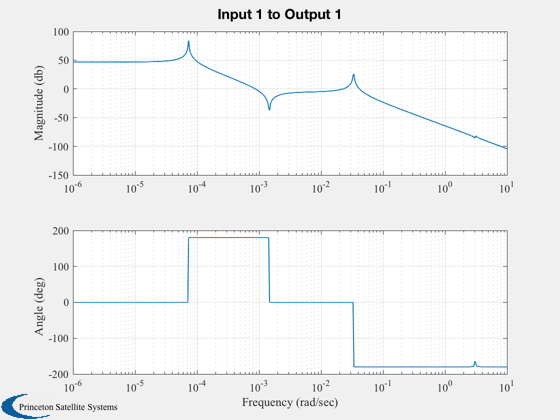
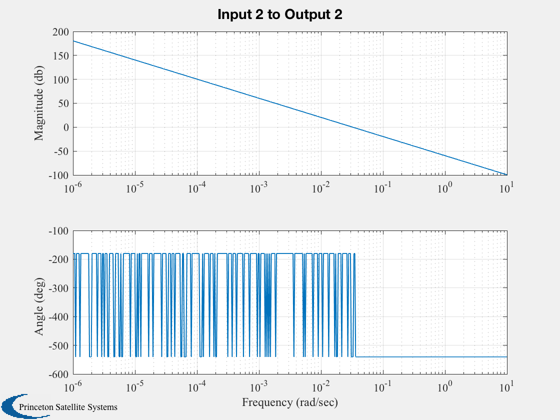
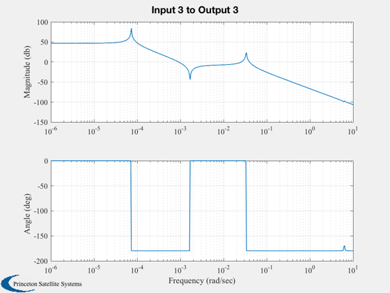
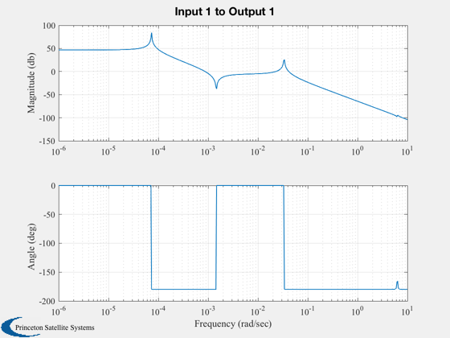
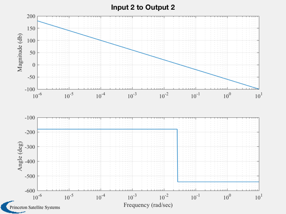
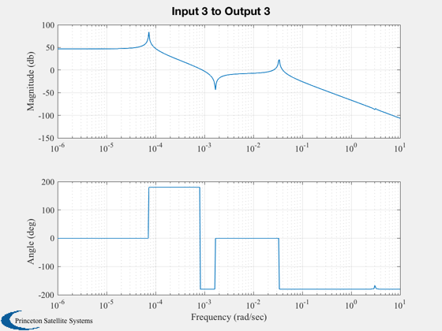

Analyze the flexible solar array on the ComStar Spacecraft.
ComStar is a hypothetical geosynchronous communications satellite. This model includes the orbit rate and nutation modes. Creates the files FlexM00 and FlexM90 used by ComStarSK.
------------------------------------------------------------------------- See also LoadFlex, GetModes, ComStar, FResp, FindDirectory, Rename, DupVect, SkewSymm, VXPhi, Geo -------------------------------------------------------------------------
Contents
%-------------------------------------------------------------------------- % Copyright (c) 1995-1998 Princeton Satellite Systems, Inc. % All rights reserved. %-------------------------------------------------------------------------- % Since version 2. %--------------------------------------------------------------------------
Constants
%----------
degToRad = pi/180;
radToDeg = 180/pi;
g = 9.80655;
wo = Geo;
Inputs
%------- nSAAngle = [0 90]*degToRad; sSAAngle = [0 90]*degToRad; zetaFlex = 0.015; useModes = [1 2]; % List the modes to be used in the array
Database
%--------- inr = ComStar('MO Inertia'); cM = ComStar('MO CM'); rNSA = ComStar('North Solar Array Base'); rSSA = ComStar('South Solar Array Base'); hW = ComStar('U MWA')*ComStar('MWA Inertia')*ComStar('Nominal MWA Rate'); mass = ComStar('MO M');
Cantilevered flex model
%------------------------ [phi,omega,rNode,mNode,nodeID,nNodes] = LoadFlex( 'ComstarSA.txt' ); [phi,omega] = GetModes(phi,omega,useModes,nNodes); nModes = length(useModes); nFlexDOF = 4*nModes; for k = 1:2 clear a b c d % Transformation matrices from the solar array frame to the body %--------------------------------------------------------------- bNSA = [ cos(nSAAngle(k)),0,sin(nSAAngle(k));... 0 1 0;... -sin(nSAAngle(k)),0,cos(nSAAngle(k))]; bSSA = [ cos(sSAAngle(k)),0,sin(sSAAngle(k));... 0 1 0;... -sin(sSAAngle(k)),0,cos(sSAAngle(k))]; % Must flip the sign of the y component for the north array %---------------------------------------------------------- dNSA = DupVect(rNSA-cM,nNodes) + bNSA*[rNode(1,:);-rNode(2,:);rNode(3,:)]; dSSA = DupVect(rSSA-cM,nNodes) + bSSA*rNode; mDNSA = dNSA.*DupVect(mNode,3)/g; mDSSA = dSSA.*DupVect(mNode,3)/g; phiNSA = bNSA*phi; phiSSA = bSSA*phi; genInr = [inr,VXPhi(mDNSA,phiNSA),VXPhi(mDSSA,phiSSA)]; genInr = [genInr;genInr(1:3,4:(3+2*nModes))',eye(2*nModes)]; %-------------------- % The state matrix is % [w;eta;etaDot]; % The input matrix is % [T;F]; %-------------------- mM = DupVect(mNode,3); for j = 1:nModes phiM = phi(:,((j-1)*nNodes+1):(j*nNodes)); mPhi = sum((phiM.*mM)'); b(j+3, 4:6) = mPhi*bNSA/mass; b(j+3+nModes,4:6) = mPhi*bSSA/mass; end b(1:3,1:3) = eye(3); % This is just the dynamics part %------------------------------- a = [SkewSymm(hW),zeros(3,4*nModes);... zeros(2*nModes,3),-diag([omega.^2,omega.^2]),-2*zetaFlex*diag([omega,omega])]; a = genInr\a; b = genInr\b; a = [a(1:3,1:(3+4*nModes));... zeros(2*nModes,3+2*nModes),eye(2*nModes);... a(4:(3+2*nModes),1:(3+4*nModes))]; b = [b(1:3,1:6);zeros(2*nModes,6);b(4:(3+2*nModes),1:6)]; % Add the attitude. Include orbit rate dynamics %---------------------------------------------- b = [zeros(3,6);b]; [n,m] = size(a); aAtt = [0 0 wo;0 0 0;-wo 0 0]; a = [aAtt,eye(3),zeros(3,m-3);zeros(n,3), a]; [n,m] = size(a); % Display eigenvalues %-------------------- s = eig(a); DispWithTitle(s,'Eigenvalues'); % The state is [qX;qY;qZ;wX;wY;wZ;modes] %--------------------------------------- d = zeros(3,6); c = [eye(3), zeros(3,n-3)]; angle = sSAAngle(k)*180/pi; w = logspace(-6,1,500); FResp(a,b,c,d,1,1,w); Rename( sprintf('Roll with arrays at %2i deg',angle) ) FResp(a,b,c,d,2,2,w); Rename( sprintf('Pitch with arrays at %2i deg',angle) ) FResp(a,b,c,d,3,3,w); Rename( sprintf('Yaw with arrays at %2i deg',angle) ) file = sprintf('save FlexM%2.2i a b c d',sSAAngle(k)*180/pi); c0 = cd; cd(FindDirectory('SCMat')) eval(file) cd(c0) end %--------------------------------------
Eigenvalues 0.000000000000000 + 0.000000000000000i 0.000000000000000 + 0.000000000000000i 0.000000000000000 + 0.000072921158553i 0.000000000000000 - 0.000072921158553i -0.094708992131515 + 6.277675975513406i -0.094708992131515 - 6.277675975513406i -0.000000000010592 + 0.033505063031180i -0.000000000010592 - 0.033505063031180i -0.046529080815352 + 3.078742045893070i -0.046529080815352 - 3.078742045893070i -0.093645867653167 + 6.242349503207746i -0.093645867653167 - 6.242349503207746i -0.045846170833088 + 3.056067523247761i -0.045846170833088 - 3.056067523247761i Eigenvalues 0.000000000000000 + 0.000000000000000i 0.000000000000000 + 0.000000000000000i 0.000000000000000 + 0.000072921158553i 0.000000000000000 - 0.000072921158553i -0.000000000008575 + 0.033505068312684i -0.000000000008575 - 0.033505068312684i -0.046366732440016 + 3.073366795926412i -0.046366732440016 - 3.073366795926412i -0.095040605993570 + 6.288654499226072i -0.095040605993570 - 6.288654499226072i -0.045846258311683 + 3.056070438215320i -0.045846258311683 - 3.056070438215320i -0.093645688968815 + 6.242343549075905i -0.093645688968815 - 6.242343549075905i     